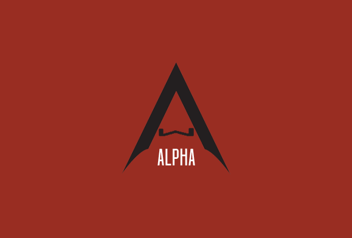

About Us
Alpha is the oldest guild in sigmalliance. The guild was formed in August 2016 under TeamSkunk and now crushes the hAAT raid under The Alliance. Alpha is led by SithKnightXzone5 and has a strong group of Officers made up of: Kevz95, Akumo, CalCrusher, Evilyoda, Shermantanker, Firmpete, FABLE, Imbizile, Skrapsetan, Sagenod, Tyranell, Estamel, and MetalTony. Alpha is an EU guild with a guild reset of 5:30pm GMT.
Requirements
Currently we are trying to build up our guild roster for Territory Battles so new recruits must have 1.5 million Character GP, all Light Side Characters of Interest, 108+ LS CMs, and IPD Mission Completion. We also require 600 tickets per day. Discord is mandatory; You must check discord at least once per day so that you don’t miss out on announcements affecting you.
Raid Info
T7 Rancor Raid:
- Raid Launch is at 6:30pm GMT on weekdays and 11:30pm GMT on weekends
- The First 24 hours is 0 Damage
- At 6:30pm GMT (on weekdays, 11:30pm GMT on weekends) the following day, the raid opens up for ZERG.
- Once ZERG is called in game chat, you must wait 20 minutes from the time an officer called ZERG. Absolutely NO damage posting is allowed until an officer notifies you that you may post.
hAAT Raid:
- Raid Launch is at 7:30pm GMT on weekdays and 00:30am GMT on weekends
- The First 24 hours is 0 Damage
- At 7:30pm GMT (on weekdays, 00:30am GMT on weekends) the following day, the raid opens up for ZERG.
- Once ZERG is called in game chat, you must wait 20 minutes from the time an officer called ZERG. Absolutely NO damage posting is allowed until an officer notifies you that you may post.
- If you are unsure of any raid rule, please consult any officer.
Raid Infractions
For small errors (such as posting a small amount of damage in 0 phase) you will simply be asked to post a 0 on the next rancor raid.
For larger mistakes (such as posting large amounts of damage before the 20 minute mark) you will be given a strike.
Strike System
This also applies to strikes given for normal rule infractions as well.
1st Strike = Miss Next Rancor Raid
2nd Strike = Miss Next AAT Raid
3rd Strike = Boot
After 30 days of having a strike, it will be removed.
Guild Rules
This also applies to strikes given for normal rule infractions as well.
1st Strike = Miss Next Rancor Raid
2nd Strike = Miss Next AAT Raid
3rd Strike = Boot
After 30 days of having a strike, it will be removed.
Discord and Conduct
- Check Discord Daily
- Keep content PG as we have young players among us (except in specific non pg areas)
- Report Bugs or Errors in the server
- Don’t Troll
- Be Respectful and Polite Towards others
Tickets
- 600 Tickets required daily
- If you miss you get a strike
- Post in #leave_of_absence if you’ll be away from the game and unable to complete tickets
24 Galactic War Battles Only
On every Tuesday-Wednesday the guild activity is GW battles. It is possible to achieve 36 battles if you save Mondays battle for Tuesday however you are forbidden to do more than 24 battles. This gives everyone the option to reach rank 1 on the activity. You are not required to do 24 but must not go over.
Mercing
If you wish to offer yourself as a Raid Merc to another guild, you are allowed to do so but must not miss your tickets for the day. If you will be away from the guild for more than 1 day, please seek permission from an officer so that they can coordinate a Ticket Merc to cover you.
Other Rules
- Treat your officers with respect. Sometimes a call against you may be unjust or unfair if this is the case it is likely a mistake. Notify the officer politely.
- Don’t openly attack or accuse another player in-game or on discord. Notify an officer and have them deal with the situation.